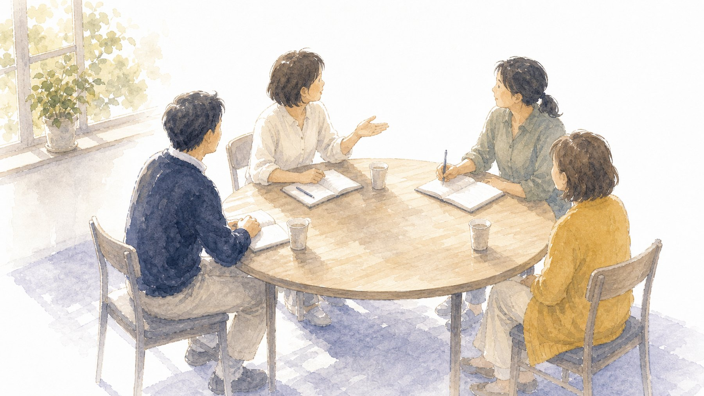
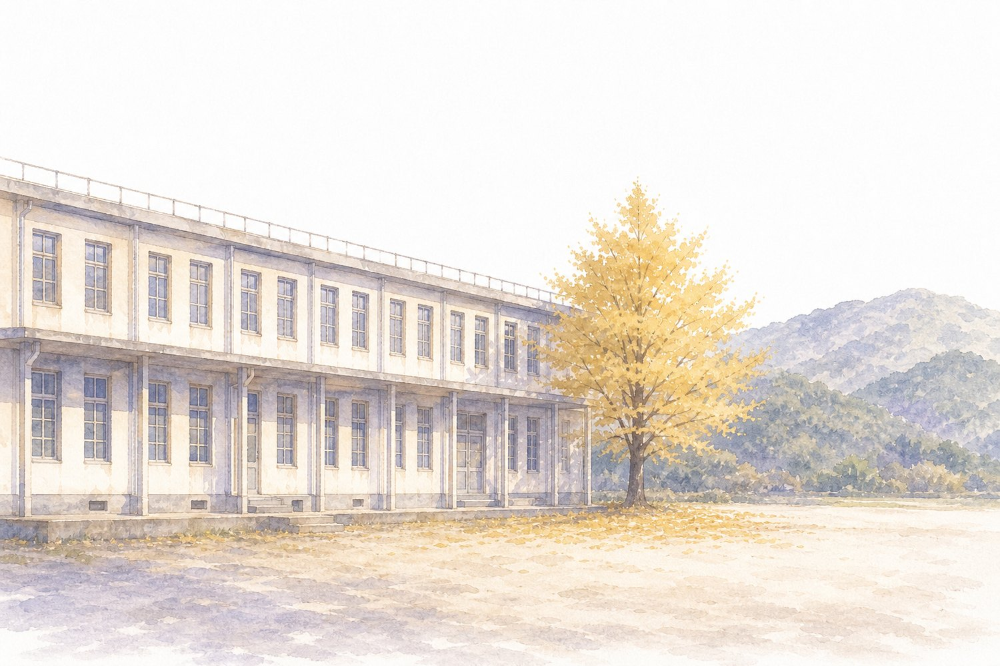

EDUCROSS in 北九州 2026
校種を越えてつながる、
最初のキッカケ。
生成AI × 授業づくり × 組織づくり
2026年8月1日（土）13:00–17:00／生涯学習総合センター
はじめに
今日、大事にしたい3つのこと
- 安心して話せる場に。はじめての方も、うまく話せなくても大丈夫です
- 勧誘や販売はしません。教育イベントのお知らせは大歓迎です
- 発表を眺める会ではありません。気になったら、その場で聞いてください
記録用に写真を撮ります。写りたくない方は受付でお伝えください。
今日の流れ
13:00
受付
13:30
アイスブレイク
14:00
実践紹介 教師と児童による生成AIの利活用
14:30
交流① 子どもがワクワクして動き出す授業づくり
15:00
交流② 若手からベテランまでが学び合う組織づくり
15:30
フリータイム
16:00
クロージング 振り返り・アンケート・集合写真
17:45
懇親会（希望者） 焼鳥 烏丸（小倉北区室町2-11-7）
13:30 – 14:00
アイスブレイク
① 写真を1枚
スマホのカメラロールから1枚選んで、
「いつ・どこで・なぜ撮ったか」を1分半で。
見せずに話すだけでも大丈夫です。
② この夏やりたいこと
ふきだしくんに書いてください。
書けたら、ひとことずつ聞いていきます。
見学だけでも大丈夫です。
アイスブレイク②
ふきだしくんを開いてください
読み取ってそのまま書き込めます。ルーム番号は画面でお知らせします。
14:00 – 14:30
実践紹介
教師と児童による生成AIの利活用
完成品より、なぜそうしたかとどこでつまずいたかを。
途中で質問の時間をとります。気になったところで止めてください。
14:30 – 15:00 交流①
子どもがワクワクして動き出す授業づくり
何から話すか迷ったら、この中のどれかを隣の人に聞いてみてください。
- 最近、子どもが勝手に動き出したのはどんな場面でしたか
- うまくいかなかった実践を1つ。どこでつまずいたと思いますか
- 子どもに生成AIを使わせるとき、いちばん気をつけていることは
- 「これは他校種でも使えそう」と思った実践はありますか
15:00 – 15:30 交流②
若手からベテランまでが学び合う組織づくり
席をひとつ動かしてから始めましょう。
- 校内で新しいことを広げるとき、最初に誰に声をかけますか
- 研修が単発で終わってしまうのは、何が足りないからだと思いますか
- やらされ感を出さずに巻き込めた工夫はありますか
- 推進役として、いちばん疲れるのはどんなときですか
15:30 – 16:00
フリータイム
決まったプログラムはありません。
- 自分の実践を画面で見せる
- 二学期の悩みを相談する
- 「一緒にやりませんか」の約束をする
- 連絡先を交換する
16:00 – 16:30
今日のふりかえり
ひとことずつ、お願いします。
- 今日、持って帰るものをひとつ
- 月曜からやってみようと思ったことをひとつ
お願い
アンケート（5分ほど）
次にどんな会をつくるか、どんな教材をつくるかを、この回答をもとに決めます。
できれば、この場でご記入ください。
おみやげ
月曜からそのまま使えるものを
School Stock
著作権を気にせず使える
プリント・素材集
PDF結合ツール
プリントの束をひとつに
インストール不要
School Stock はまだ作っている途中です。「こんな教材がほしい」をアンケートで教えてください。
つながる
今日の続きは、こちらで
GEG Chikuho オープンチャット
研修やイベントの情報が流れます。
校種を問わずどなたでも。
外﨑の公式LINE
教材の更新と、明日試せる実物を
おすそ分けしています。

次の場
12月12日（土）
GEG Chikuho 5周年イベント
会場は田川の「いいかねパレット」。
九州各地から先生が集まる一日を準備しています。
まずは日付だけ空けておいてください。
もっとAI活用の話を聞きたい方へ
8月7日（金）
Gemini for Education
アイデアソン 2026 Showcase
外﨑も発表する側で参加します。
13:00–16:30／現地は Google 渋谷オフィス（先着50名）
オンライン配信は人数制限なし。全国どこからでも見られます。
対象は小中高・高等教育の先生、教育委員会の担当者、大学生。登録は無料です。
ありがとうございました
明日の授業が、
また楽しみになりますように。
懇親会は17:45から。焼鳥 烏丸（小倉北区室町2-11-7）・会費5,000円
EDUCROSS in 北九州実行委員会